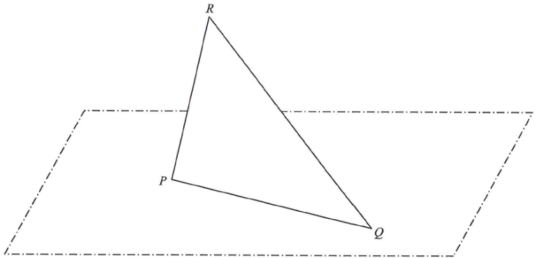

In Figure 2, the triangular paper card \(PQR\) is held such that \(PQ\) lies on the horizontal ground. It is given that \(PQ = 30\) cm, \(PR = 25\) cm and \(\angle QPR = 95^\circ\).
(a) Find [4 marks]
(b) Let \(M\) be the mid-point of \(QR\). A craftsman finds that the angle between \(PR\) and the horizontal ground is \(70^\circ\). The craftsman claims that the angle between \(PM\) and the horizontal ground exceeds \(40^\circ\). Is the claim correct? Explain your answer. [3 marks]

Use the cosine rule in \(\triangle PQR\) with the two given sides and the included angle:
\[ QR^2 = PQ^2 + PR^2 - 2(PQ)(PR)\cos\angle QPR \]
\[ QR^2 = 30^2 + 25^2 - 2(30)(25)\cos 95^\circ \]
\[ QR^2 \approx 900 + 625 - 1500(-0.0871557) \approx 1655.734 \]
\[ QR \approx 40.69070673 \text{ cm} \approx \boxed{40.7 \text{ cm}} \]
Apply the sine rule:
\[ \frac{\sin\angle PQR}{PR} = \frac{\sin\angle QPR}{QR} \]
\[ \sin\angle PQR \approx \frac{25\sin 95^\circ}{40.69070673} \approx 0.612026375 \]
So \(\angle PQR \approx 37.73809375^\circ\) or \(\angle PQR \approx 142.2619063^\circ\).
But the angle sum of \(\triangle PQR\) is \(180^\circ\) and \(\angle QPR = 95^\circ\), so \(\angle PQR < 85^\circ\). The \(142.26^\circ\) solution is rejected.
\[ \angle PQR \approx 37.73809375^\circ \approx \boxed{37.7^\circ} \]
\(M\) is the mid-point of \(QR\), so \(QM = \dfrac{QR}{2} \approx 20.34535337\) cm.
Cosine rule in \(\triangle PQM\) with the included angle \(\angle PQM = \angle PQR \approx 37.73809375^\circ\):
\[ PM^2 = PQ^2 + QM^2 - 2(PQ)(QM)\cos\angle PQM \]
\[ PM^2 \approx 30^2 + 20.34535337^2 - 2(30)(20.34535337)\cos 37.73809375^\circ \]
\[ PM \approx 18.66993831 \text{ cm} \]
Let \(D\) and \(N\) be the projections of \(R\) and \(M\) on the horizontal ground respectively. Since \(M\) is the mid-point of \(QR\) and \(D,N\) lie in the same vertical plane, \(MN\) is the mid-segment in \(\triangle QRD\):
\[ MN = \tfrac{1}{2} RD \]
The angle between \(PR\) and the ground is \(70^\circ\), so \(RD = PR\sin 70^\circ\). Hence
\[ MN = \tfrac{1}{2} PR\sin 70^\circ = \tfrac{1}{2}(25)\sin 70^\circ \approx 11.74615776 \text{ cm} \]
The angle between \(PM\) and the ground is \(\angle MPN\), where \(PN\) is the projection of \(PM\) on the ground. In the right-angled triangle \(PMN\) (right angle at \(N\)):
\[ \sin\angle MPN = \frac{MN}{PM} \approx \frac{11.74615776}{18.66993831} \approx 0.629141 \]
\[ \angle MPN \approx 38.98730493^\circ \]
Since
\[ 38.98730493^\circ < 40^\circ \]
the angle between \(PM\) and the horizontal ground does not exceed \(40^\circ\).
Question. In the figure, the triangular card \(PQR\) is held so that \(PQ\) lies on horizontal ground. It is given that \(PQ=28\text{ cm}\), \(PR=24\text{ cm}\) and \(\angle QPR=100^{\circ}\). (a) Find \(QR\) and \(\angle PQR\). (b) Let \(M\) be the mid-point of \(QR\). If the angle between \(PR\) and the ground is \(70^{\circ}\), is the angle between \(PM\) and the ground greater than \(40^{\circ}\)? Explain.